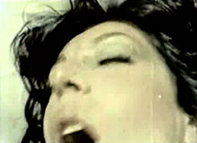

Gebrochene Sinnlichkeit
Broken Sensuality

Zeynep Tuna – Germany 2013 – 18 min.
E+P: Zeynep Tuna
HD – türkisch
Tuna worked with material of Turkish sex films of the 1970s and 80s which she discovered online and in Istanbul’s pirated copies milieu. Disguised as comedies or melodramas, they survived censorship through the 80s thanks to the removal of all sexual content before their permission; it was re-embedded afterwards. Zeynep Tuna created her own version of sex films. She also used the technique of repetition; she questioned the depiction of eroticism and sexuality and the presentation of women in films. Her reinventing the material focuses on men’s views and female bodies.
Tuesday 14/10 10:30 p.m. Werkstattkino
Zeynep Tuna, born in 1985 in Turkey. Film & Television Studies at the Istanbul Bilgi University and Art in Context at the University of Arts in Berlin.
Films (selection): Unfortunate Women of Desire 2010 – In the Cut: An Unforgiving Woman 2011 – Gebrochene Sinnlichkeit 2013